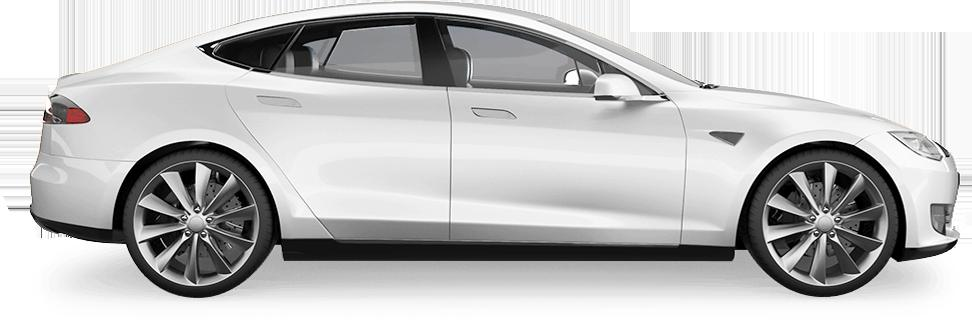

АвтосервисПрофи
Кузовной ремонт и покраска в Красноярске
Кузовной ремонт в Красноярске компания «АвтосервисПрофи» выполняет с помощью новейшего восстановительного оборудования, которое не так-то просто найти в нашем городе.
пн-пт с 9:00-20:00
сб с 9:00-19:00
вс вых
Наши услуги
 Кузовной ремонтПлотное движение в городах и низкое качество дорожного полотна вызывают большое количество дорожно-транспортны…
Локальный ремонтЦентр ремонта «АвтосервисПрофи» проводит ремонт, восстановление, покраску и замену бамперов.
Покраска кузоваКаждый автовладелец сталкивается с повреждениями ЛКП автомобиля, в результате чего требуется устранение этих д…
ПолировкаПолировка авто может быть полезной, и дело здесь не в превосходном внешнем виде и блестящем кузове машины. Пол…
Кузовной ремонтПлотное движение в городах и низкое качество дорожного полотна вызывают большое количество дорожно-транспортны…
Локальный ремонтЦентр ремонта «АвтосервисПрофи» проводит ремонт, восстановление, покраску и замену бамперов.
Покраска кузоваКаждый автовладелец сталкивается с повреждениями ЛКП автомобиля, в результате чего требуется устранение этих д…
ПолировкаПолировка авто может быть полезной, и дело здесь не в превосходном внешнем виде и блестящем кузове машины. Пол…